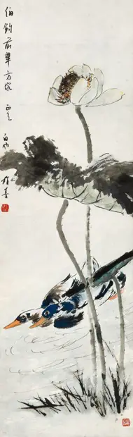

LOTUS AND DUCKS
访问原网页 ↗Visit original website ↗

S027 · MutualArt；askART交叉记录 · 2021-11-28拍卖
纸本设色；42.83×13.19英寸；askART列Lot660，署Baiye Teng。Auction description: ink and color on paper, 42.83 × 13.19 inches. askART identifies Lot 660 and Baiye Teng.
馆藏图像与原文Archived images and documents

来源页摘录Source-page excerpt
Teng Baiye | LOTUS AND DUCKS | MutualArt
View LOTUS AND DUCKS By Baiye Teng; ink and color on paper; 108.8×33.5 cm. ; Signed; . Access more artwork lots and…
原始网址Original URL
https://www.mutualart.com/Artwork/LOTUS-AND-DUCKS/60EF55CE35D7E090E022DC9DDFC9DE54